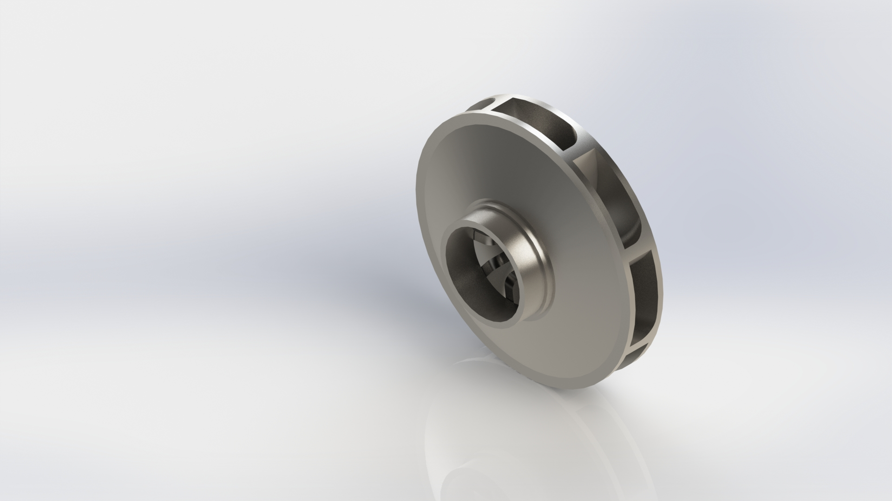
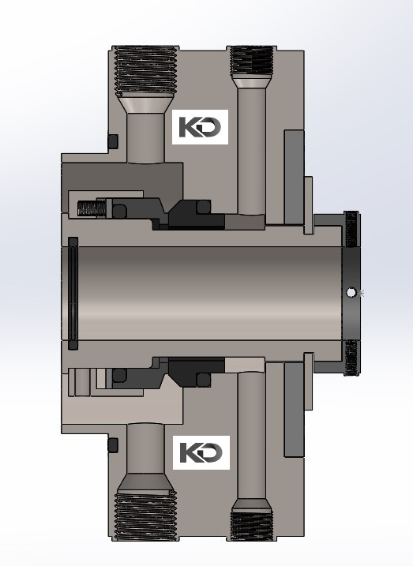
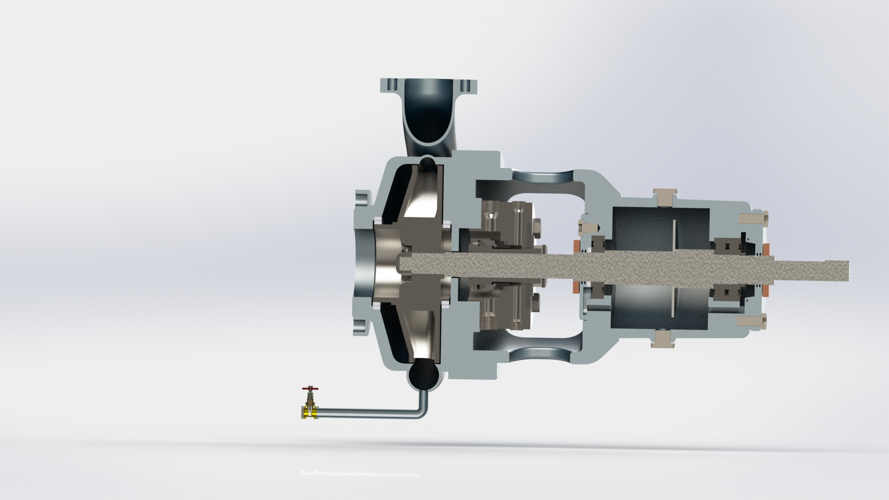

KREISELPUMPENKONSTRUKTION & TECHNISCHE ILLUSTRATIONEN FÜR FACHVERÖFFENTLICHUNG
Kunde: Kirit Domadiya – Service Solution Manager, Sundyne Middle East (Juni 2021)
Projektbeschreibung
Bereitstellung einer umfassenden 3D-CAD-Modellierung sowie hochdetaillierter technischer Visualisierungen von Kreiselpumpensystemen zur Unterstützung einer professionellen Fachveröffentlichung. Die Arbeit umfasste die detaillierte Modellierung der Laufradgeometrie, des Spiralgehäuses (Volute), der Wellenanordnung, der Lagerung sowie der Gleitringdichtungsbaugruppen. Schnittdarstellungen und Explosionsansichten wurden entwickelt, um interne Strömungswege und das Zusammenspiel der Komponenten für Schulungs- und Referenzzwecke anschaulich darzustellen.
Aufgaben & Verantwortlichkeiten
- Modellierung vollständiger Pumpenbaugruppen in SolidWorks.
- Erstellung präziser Schnitt- und Teilansichten.
- Anfertigung publikationsreifer, fotorealistischer Renderings.
- Direkte Zusammenarbeit mit dem Fachautor zur Abstimmung der Visualisierungen mit den technischen Erläuterungen.
Verwendete Werkzeuge
- SolidWorks – 3D-CAD-Modellierung & Baugruppen
- KeyShot – Hochwertiges technisches Rendering
Wesentliche Ergebnisse
- Bereitstellung präziser Visualisierungen rotierender Maschinen für die Veröffentlichung.
- Verbesserte Verständlichkeit der Pumpenfunktion und der Gleitringdichtung.
- Vertiefung des praktischen Verständnisses industrieller Kreiselpumpensysteme.
Visualisierungen



